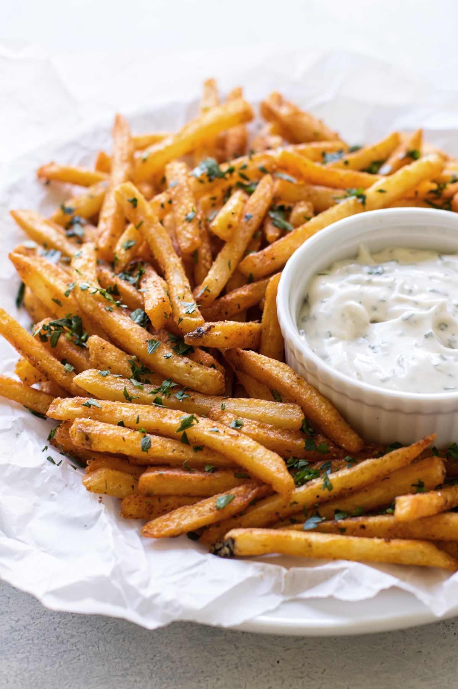

Cajun Fries

Description
Crispy on the outside, tender on the inside like French fries should be, and dusted with slightly spicy Cajun seasoning. They make a delicious side for any meal!
Ingredients
- Olive oil
- Russet Potatoes
- Cajun Seasoning
- Salt
Steps
- Scrub the potatoes and pat them dry. Then cut them into 3/8-inch thick French fries.
- Soak the fries in cold water for 15 minutes.
- Dry the fries really well with a clean kitchen towel or paper towels. Rinse and dry the soaking bowl and then place the fries back in it.
- Drizzle oil over the fries and toss to evenly coat them.
- Sprinkle on the seasonings and toss to evenly coat the fries.
- Arrange the fries in a single layer on a parchment paper lined baking sheet.
- Bake at 425° F for 27-31 minutes, until golden brown and crispy.
Enjoy!